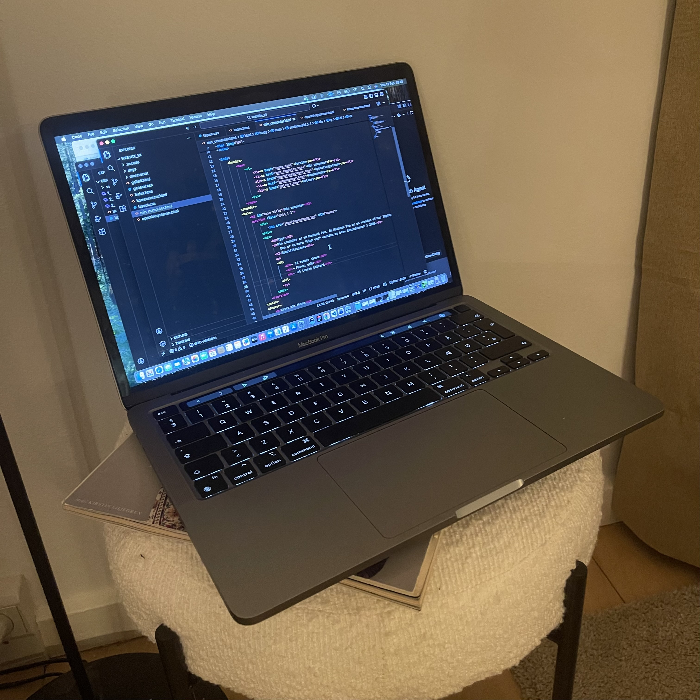

Min computer

Type
Min computer er en MacBook Pro. En Macbook Pro er en version af Mac laptoppen som er lavet af Apple. Den er en mere "high end" version og blev introduceret i 2006.
Specifikationer
- • 14 tommer skærm
- • Farve: sølv
- • 24 timers batteri